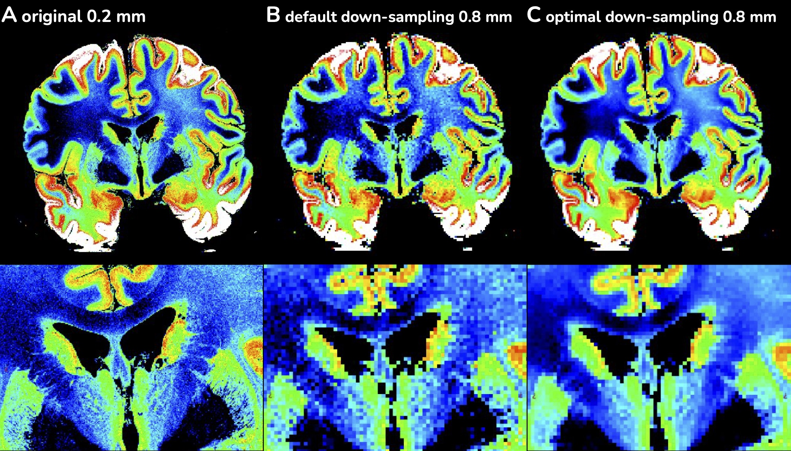
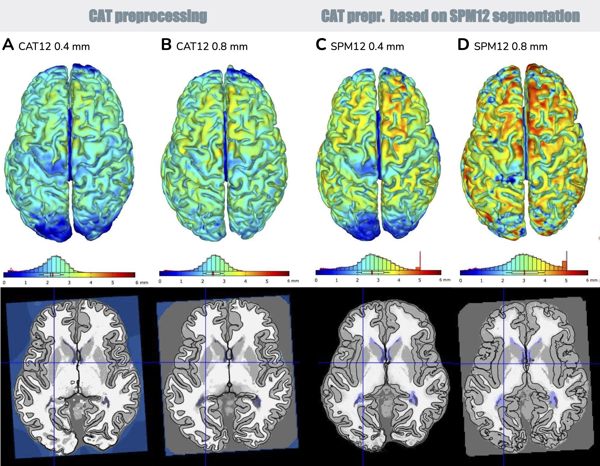

Preprocessing of post-mortem data:
The processing of ultra-high resolution PD-weighted post-mortem data (Edlow et al., 2019) with up to 0.2 mm was tested in the CAT12.8 revision 1880. We have prepared two main methods for processing such images in expert mode: (i) using the standard CAT pipeline or (ii) using SPM for segmentation, which benefits greatly from the higher resolution, followed by the CAT SPM preprocessing batch. In both scenarios, we propose to adjust some parameters, namely bias correction, skull stripping, processing accuracy and surface reconstruction parameters, to take advantage of the full resolution (start CAT12 in developer mode, edit / load SPM/CAT post-mortem batch). CAT is generally optimised for T1-weighted images, while PD/T2-weighted images run on a more general pipeline, e.g. without specific routines such as local adaptive segmentation (LAS).
The down-sampling was original included to support faster tests but in can also help to improvement the SNR (see Figure 1) that can help to model the brain and correct inhomogeneities (see Figure 2A and 2B). Moreover, it helped limited the data-range of the input data to help the tissue segmentation. We also tried to adopt the number of gaussians per tissue class that do not allow clear suggestions. However, due to the lack of test data we were only able to test some general aspects and suggest testing further settings or requested additional support.

Fig. 1: Reducing the image resolution allows optimising the signal-to-noise ratio by local averaging similar to the partial-volume-effect. Compared to the classical downsampling (B) of the original image (A) the lower amount of noise can improve the image preprocessing.
The reduction of image resolution allows optimization of the signal-to-noise ration by local averaging without blurring the image. Although the simple classic down-sampling (B) of the original image (A) generally looks firmer it still suffers by the original noise that troubles the preprocessing, whereas the optimized reduction (C) is more balanced.

Fig. 2: Results of CAT12 preprocessing (A,B) and CAT12 preprocessing based on SPM12 tissue maps (C,D) for a post-mortem PD-weighted image shown in Figure 1. Downsampling to 0.8 mm improves the signal-to-noise ratio, contributes to better correction of image inhomogeneity (see occipital lobe). SPM12 segmentation benefits greatly from the higher resolution (<=0.5 mm; C), which allows to capture tiny structures modelled as partial volume effects by CAT-AMAP segmentation, even at lower resolution (B). Due to the very limited amount of images and the rare applications, the processing of ultra-high resolution post-mortem data is still at a rather early stage of development.
References:
- Edlow, B.L., Mareyam, A., Horn, A., Polimeni, J.R., Witzel, T., Tisdall, M.D., Augustinack, J.C., Stockmann, J.P., Diamond, B.R., Stevens, A., Tirrell, L.S., Folkerth, R.D., Wald, L.L., Fischl, B.R., van der Kouwe, A., 2019. 7 Tesla MRI of the ex vivo human brain at 100 micron resolution. Sci. Data 6, 1-10. doi:10.1038/s41597-019-0254-8 Data: https://kottke.org/19/07/the-highest-resolution-mri-scan-of-a-human-brain